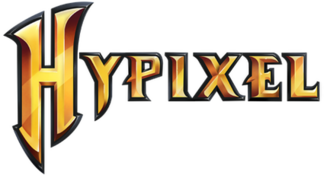

is Hypixel Network, simply known as Hypixel, is a Minecraft server that hosts minigames. It was released on April 13, 2013 by Simon "hypixel" Collins-Laflamme and Philippe Touchette,
and is managed and run by Hypixel Inc. Hypixel is only available on the Java Edition of Minecraft,
but briefly had a Bedrock variant.In Hypixel you can get ranks that allow you to get more rewards and features. There are ranks like: